Approved references alongside screenshots of the running Expo app, captured at 393 × 852 CSS pixels in Chrome on Windows. Captures use an isolated test sign-in with external requests blocked. They show real UI components and unavailable connections; they are not physical iPhone captures or evidence of a Minecraft build.
The composition and working flows are implemented. Exact visual parity is not claimed: the preserved template generators produce much simpler architecture than the approved illustrations. The plan renderer does not invent roofs, trees, terrain or furniture.
Branded landscape, four live status cards, Build Studio banner, featured structures, Quick Actions and all six tabs. Unpaired states replace the reference’s sample player and world.
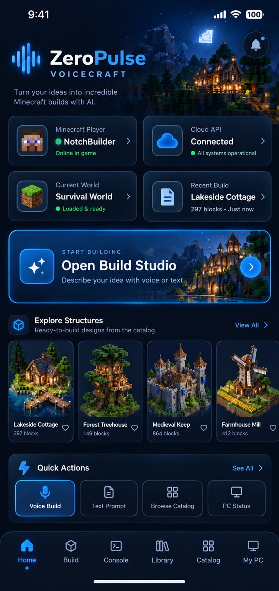
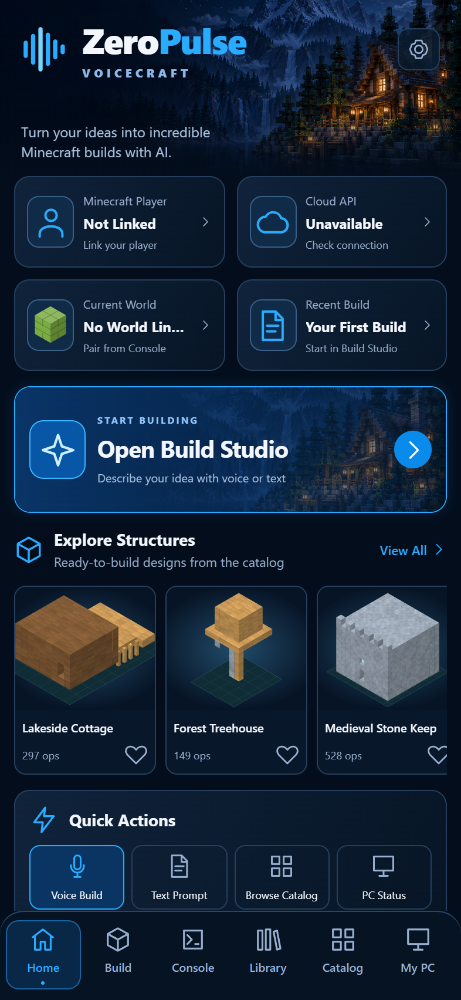
Search, category filters, favorites and two-column cards. Every thumbnail is rendered from the executable plan. Existing simple template geometry is substantially less ornate than the reference.
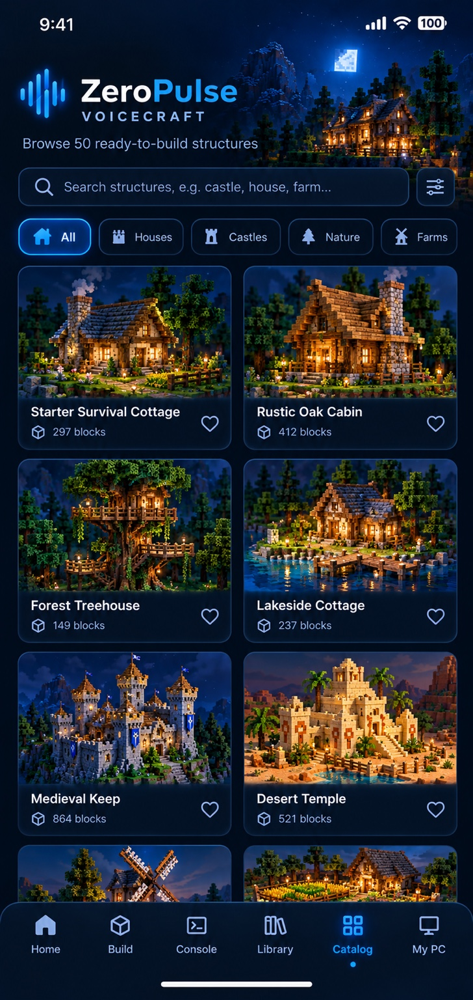
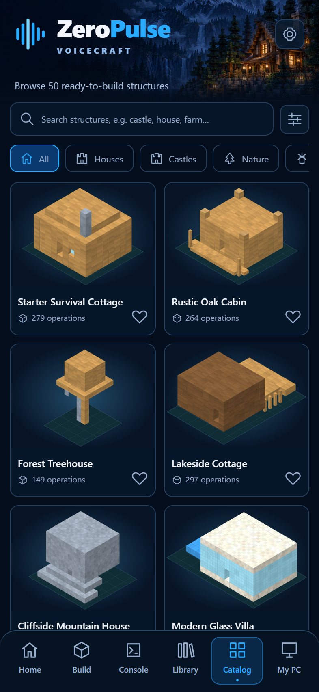
Exact block positions and materials, four camera views, zoom, transforms, supported placement, local saves and fingerprint-bound approval. Controls continue below the fold to remain operable on a narrow phone.
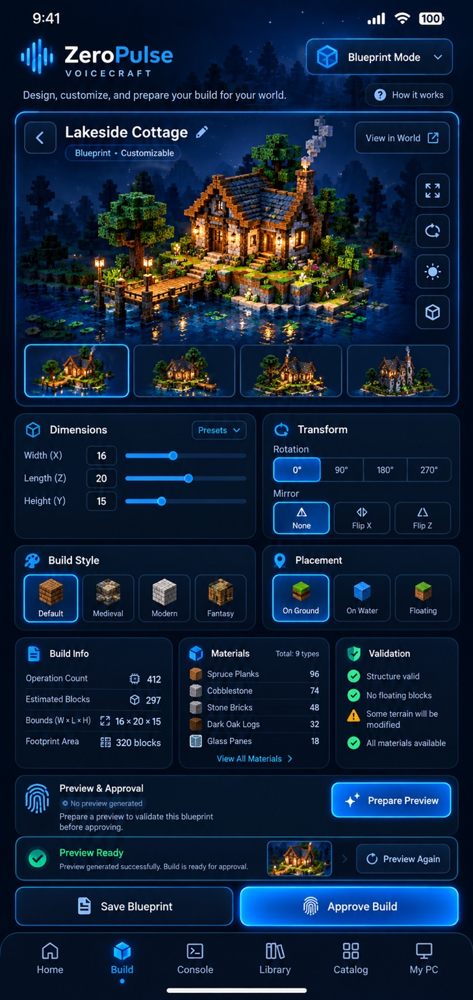
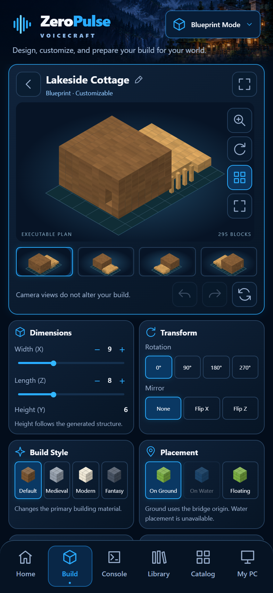
Platform selection, health checks, published address, clipboard and eight-character pairing. The reference’s sample address and ready indicators are absent when the server is unavailable.
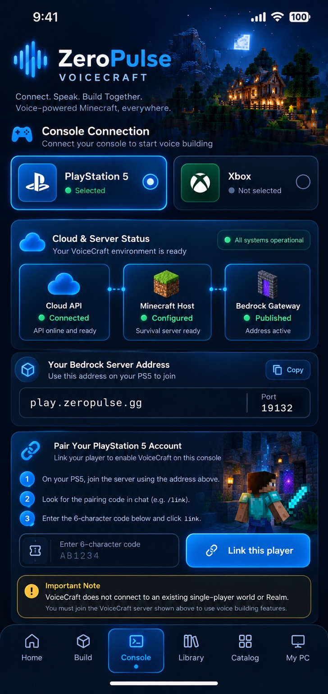
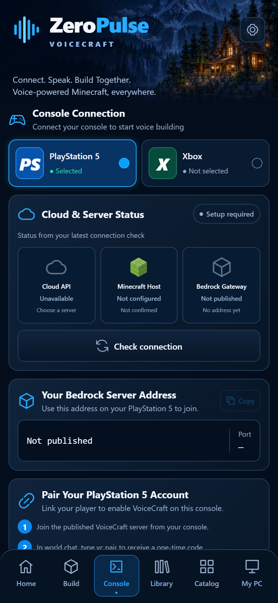
Unpaired PC shown. Pairing, permissions, actual progress, build controls and navigation are implemented. No connected machine or build result was fabricated for these screenshots.
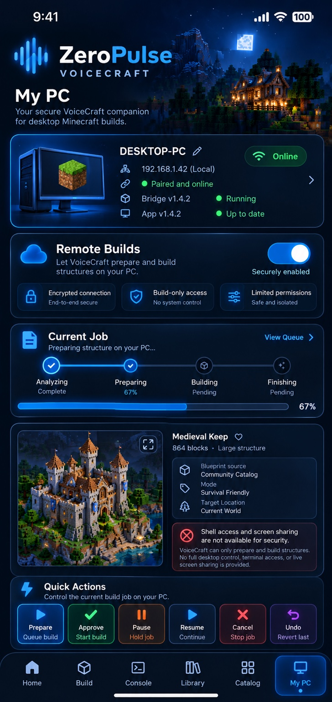
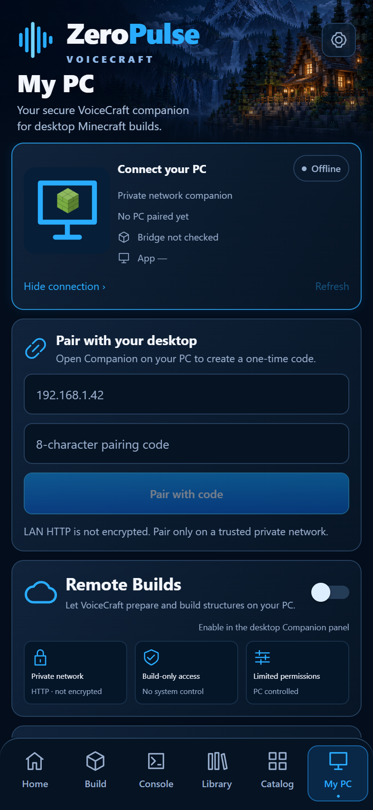
Additional captures at actual scroll positions. The saved blueprint was created through the editor’s Save action. Approval remains unavailable without a matching PC confirmation.
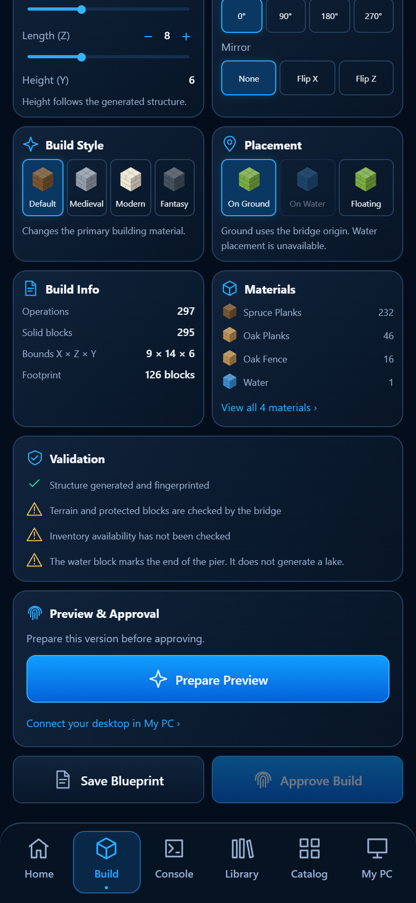
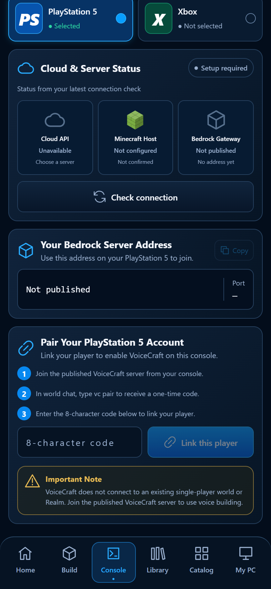
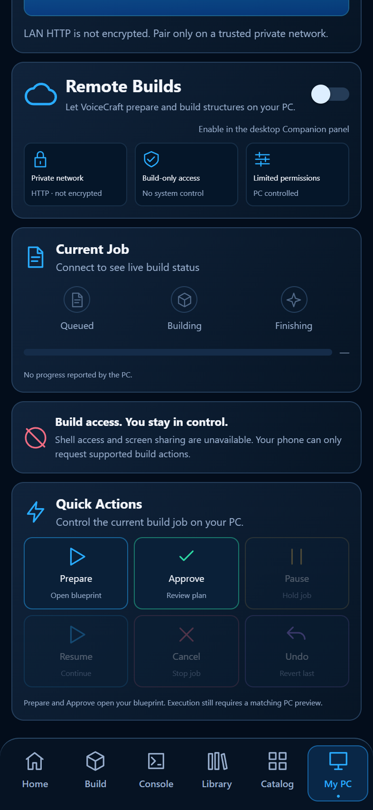
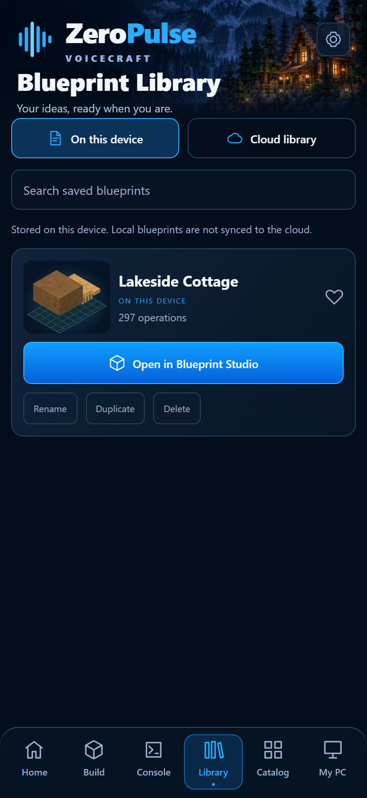